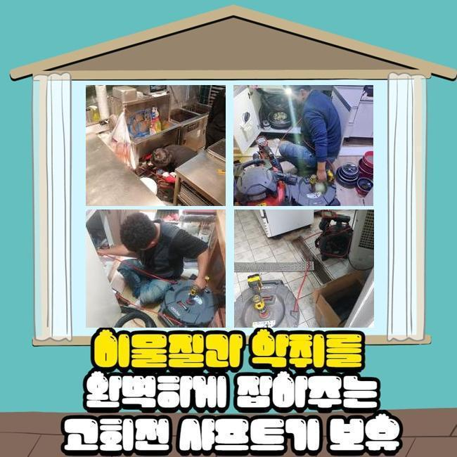
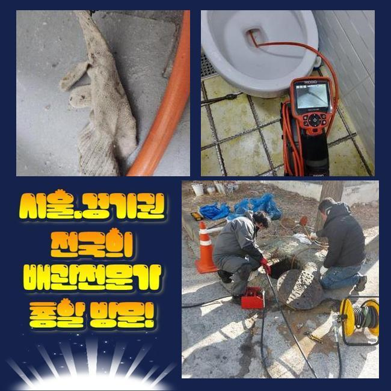
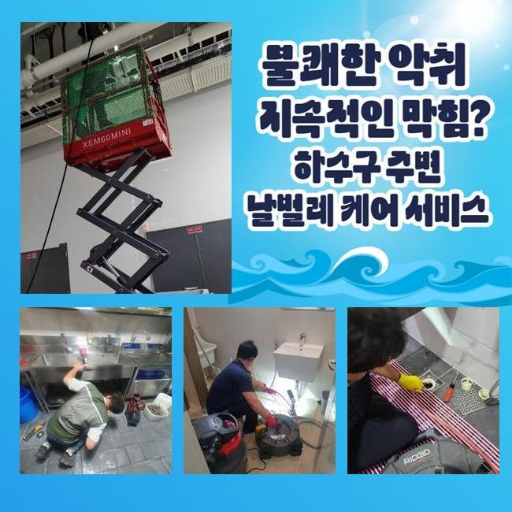
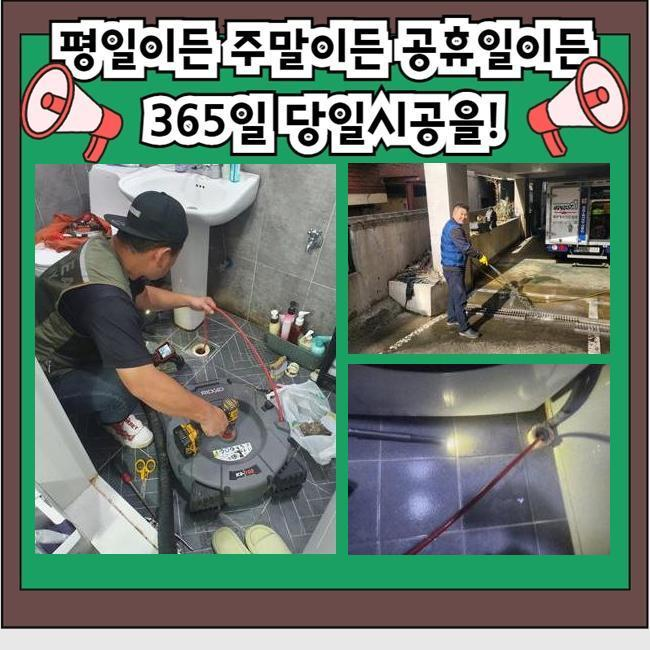
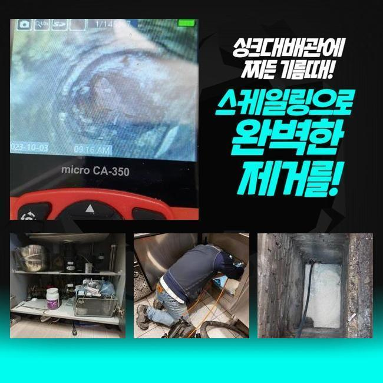
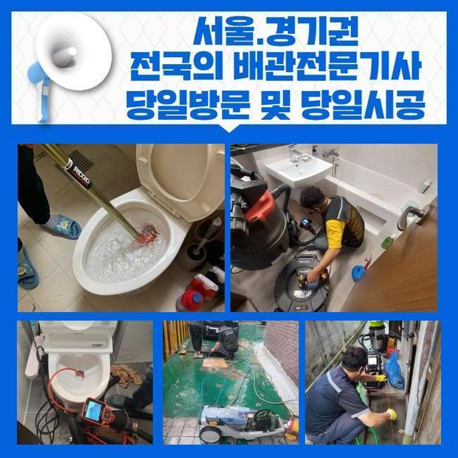

🏠 마포 대흥동싱크대역류 연남동 하수구청소 누수공사
용인 남동 싱크대막힘 전문 시공 후기

📋 작업 개요
- 위치: 용인 남동, 남동, 용인
- 서비스 유형: 싱크대막힘, 하수구막힘, 배관막힘, 누수수리, 역류해결, 뚫는업체, 배관청소, 고압세척, 설비공사
- 작업 일시: 2025. 5. 9. 20:07
- 업체명: 하수구수사대 (010-5615-2118)
🔍 문제 상황
마포 대흥동싱크대역류 연남동 하수구청소 누수공사
화장실이나 씽크대에서 물빠짐이 정상적이지 않아서 답답했던적 경험하셨을 거예요
씽크대에서 악취가 발생되었다면 불편함이 크게 느껴질텐데 지금 저희가 알려드리는 정보들을 읽어보신다면 보탬이 되실 거예요
씽크대가 막혀버리면 여러분께서는 무엇을 이용하여 처리하고 계신지요
다양한 잔해물들이 쌓일경우 배관이 막혀버려서 하수들이 고일수도 있으며 역류문제까지 발현될수 있어요
막힘문제가 생긴다면 집안일외에도 영업장소도 제약이 걸리게되죠
주방막힘의 주요이유는 일반적으로 음식잔해물과 기름때에요
기름때와 찌꺼기는 시간갈수록 하수구내에 점진적으로 누적되며 물이 빠지는 속력을 더디게 하고 심화되면 물자체가 흘러나가지 못합니다
저희들의 경우 이런일들을 말끔하게 해소해드리며 정상적인 배수상황을 복구해드려요
하수구랑 연관되어있는 문제일 경우 확실한 처리를 해드릴수 있고 추가적으로 복합적인 문제들도 신속정확히 처리해드려요
어떻게 싱크대막힘을 뚫는지 현장사례로 안내드리도록 하겠습니다

🔎 원인 분석
💡 전문가 진단: 정밀 진단 장비를 사용하여 슬러지의 고착 여부를 판명하고 타격/세척 작업을 실시했습니다.
근래에 식당쪽에서 막힘문제가 발생해 시급한 문의를 받게 되었어요
영업하는 곳이다보니 영업을 진행할때 제한이 걸릴겁니다
식당같은 공간은 가능한 빨리 해결해드리려고 노력해요
현장으로 이동후 입구쪽부터 물이 원활히 빠져나가는지 점검했는데요
트렌치부터 메인하수구 부분까지 막히게 되었으며 문제에 대하여 고객분께 알려드리고 나서 작업에 돌입했죠
작업시작전 작업과정에 대한 부분과 금액과 연관된 부분들도 상세하게 안내드려요
우선은 석션도구를 이용해 역류해서 넘치게된 하수와 오물들을 빨아내어 상황을 파악합니다
막힌상태에 대해 알아보니 기름때가 배관안에 딱딱한 돌같이 굳게되서 석션만으로는 처리가 힘든 상황이었습니다
석회화가 진행되었다면 플렉스 샤프트기로 덩어리진 이물을 없애야 한답니다
그렇지만 오늘 장소의 경우엔 고착화 상태가 심각하다보니 샤프트기로 처리가 어려워보여 저희업체는 더욱 강력한 기구를 이용해서 문제처리를 시도해보기로 했습니다
확실한 청소를 위하여 고압청소기를 사용해 하수구내부에 석회물을 청소했습니다
하수도가 막히게된 현장마다 다짜고짜 고압청소를 쓰는것은 안전성을 고려하지 않은 것이죠 배관상태가 노후되었을 경우에는 무리한 압력으로 하수도를 균열시키기도 하죠

🔧 작업 과정
저희들의 경우에는 하수도상태를 면밀하게 살핀후 적당한 압력수준을 조정해서 업부를 처리합니다
한두시간 배관청소를 이어가면서 배관내에 잔존된 이물질들을 깔끔히 세척해 냈습니다
수리가 완료되면 카메라장비로 하수구내부를 재차 점검해서 쌓여있던 이물들이 확실히 세척되었음을 의뢰자분 또한 확인했죠
꼼꼼한 점검과정으로 작업을 진행하기에 안심하셔도 괜찮아요
막히는 문제들을 예방할수있는 방법들에 대해서 설명드려 보도록 하겠습니다
주기적인 방식으로 배관에 끓는물을 부어보거나 펑크린같은 제품을 이용하는것도 슬러지를 제거하는데 효과적이죠
거름망설치로 잔해물질이 퇴적되는것을 예방할수 있답니다
이밖에도 하수구트랩을 사용해 악취증상까지 막을수가 있답니다
예방조치를 했음에도 막힘이 일어났다면 배관업체에 문의해 보는것이 알맞은 방법이에요
막힘징조가 나타났을때 즉각적으로 대책을 마련하는것이 현명한거에요
많은분들이 막힘문제를 맞이했을때 방치한다거나 자가적으로 과하게 조치를취해 악화시키는 경우도 있습니다
방치하신다면 2차문제로 불거질수가 있는데요
그렇다보니 옷걸이나 막대기같은 물건을 통해 배관내부를 휘저으시거나 방치하시는 것은 삼가주시길 바랍니다
저희들은 고객의 귀중한 시간들을 낭비하시지 않게끔 빠르고 효율있게 수리를 진행해요
모든과정이 끝나기전에 고객분과 결과가 어떠한지 점검해보고 배수점검까지 해드리니 참고하시면 좋을것같습니다
작업내용은 뚜렷하게 공개하며 수리에 들어가기전 의뢰자분의 승낙을 얻은뒤에 작업이 진행되는데요
막히는 증상들은 평상시에 쉽게 지나칠수 있겠지만 막힘현상이 발현되면 이차적인 증상으로 이어질겁니다
재차 말씀드리지만 문제를 맞이하시기 이전에 예방책을 취해보시고 막힘현상이 발현되면 배관 기술자의 지원으로 처리하는게 중요하답니다
싱크대문제로 불편함을 느끼셨다면 시간상관없이 저희한테 의뢰주시길 바랍니다 꼼꼼하게 작업해서 성공하는 결과물로 보여드리겠습니다


✅ 작업 완료
전문업체로 의뢰할때 여러의 요소부분을 세세하게 따져보신 다음 선정해야하죠
저희들은 상시 고객들을 우선순위로 생각할 뿐 아니라 깔끔한 배관으로 조성시키고자 노력합니다
씽크대 배수상태가 느리다거나 물넘침으로 불편감을 겪으셨다면 문의하셔서 문제처리를 해보세요!
배관과 연결된 문제라고 하신다면 어떻게든 저희업체가 바로 잡아드리도록 할게요!
한시간 안팎으로 내방해 드릴수가 있으며 AS서비스도 진행하고 있사오니 언제든지 문의 바랍니다




⚠️ 베란다 누수 및 방수 관리 방법
- ✅ 비가 많이 올 때 창틀 주변이나 아래층 천장에 얼룩이 생기는지 정기적으로 확인해 보세요.
- ✅ 우수관 주변 실리콘 마감이 들뜨거나 깨진 틈새가 있는지 손상 여부를 수시로 체크하세요.
- ✅ 베란다 바닥 타일의 줄눈(메지)이 소실되면 그 틈으로 물이 침투하여 누수가 유발됩니다.
- ✅ 누수 의심 증상 발견 시 방치하면 아래층 손실이 커지므로 즉시 전문가의 진단을 받으십시오.
💡 핵심 정리
- 확실한 장비 작업(내시경 점검 및 샤프트 스케일링)으로 원인을 뿌리 뽑습니다.
- 작업 후 1년 이내에 동일한 부위 재발 시 100% 무상 A/S 서비스를 보장합니다.
- 서울 · 경기 · 인천 전 지역에 24시간 언제든 긴급 출동할 수 있도록 항시 대기 중입니다.
❓ 자주 묻는 질문 (FAQ)
🚨 용인 남동 싱크대막힘 문제로 고민이신가요?
정확한 원인 진단과 확실한 시공으로 재발 없는 해결을 약속드립니다.
24시간 긴급 출동 | 서울 · 경기 · 인천 전지역 | 1년 내 재발 시 무상 A/S